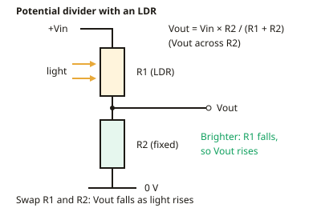

A-level Physics Year 13 · Topic 23
Electronics: sensors, outputs and signals
Electronics, sensors, outputs and signals, is about how circuits sense the world and control things in it.
We will use potential dividers with light and temperature sensors, and drive LEDs, relays and motors safely.
Then we use transistors as switches, compare analogue and digital signals, and see how signals are converted and sampled.
- 5 subtopics
- 105 questions
- Free: 23.1 notes and 10 questions
In this topic
- 23.1Voltage dividers and input sensors (LDR, thermistor)Free below · 19 questions
- 23.2Output devices: LEDs, relays, motors and protection diodesOpen in Full Marks · 23 questions
- 23.3The transistor as a switchOpen in Full Marks · 17 questions
- 23.4Analogue and digital signalsOpen in Full Marks · 25 questions
- 23.5Analogue-to-digital and digital-to-analogue conversion and samplingOpen in Full Marks · 21 questions
23.1 · Free notes
Voltage dividers and input sensors (LDR, thermistor)

Key points
- A potential divider is two resistors in series across a supply. The same current flows through both, so the supply voltage splits in proportion to resistance: V1 : V2 = R1 : R2.
- Vout = Vin × R2 / (R1 + R2), where R2 is the resistor the output is measured across. Always state which resistor the output is taken across.
- Current through an unloaded divider is I = Vin / (R1 + R2). The voltage across each resistor is V = IR.
- An LDR (light-dependent resistor) has resistance that decreases as light intensity increases. It is typically about 1 MΩ or more in the dark and a few hundred ohms in bright light.
- An NTC thermistor has resistance that decreases as temperature increases, because more charge carriers are released. Its resistance does not fall in a straight line, so its response is non-linear.
- Placing the sensor in the divider changes resistance into a voltage signal. If the sensor is the upper resistor R1, Vout across the fixed resistor rises as light or temperature rises. If the sensor is the lower resistor, Vout falls.
- Swapping the sensor and the fixed resistor inverts the behaviour of the circuit. This is how the same sensor is used for 'on in the dark' or 'on in the light', and 'on when hot' or 'on when cold'.
- A potentiometer is a variable resistor used as a divider. Moving the slider changes R1 and R2 while R1 + R2 stays constant, so Vout varies smoothly from 0 to Vin.
- Loading effect: a load connected across the output is in parallel with R2. This lowers the effective R2 and so lowers Vout. The load resistance should be much greater than R2 to avoid this.
- For the largest voltage change near a chosen switching point, choose the fixed resistor close in value to the sensor's resistance at that point.
- Practical: calibrate a thermistor with a stirred water bath, a thermometer and an ohmmeter. Stirring keeps the temperature uniform, so the thermistor and thermometer read the same temperature. Allow time to reach thermal equilibrium.
In more detail
- Worked divider: Vin = 9.0 V, R1 = 10 kΩ, R2 = 5.0 kΩ → Vout = 9.0 × 5.0 ÷ 15 = 3.0 V.
- Worked LDR: LDR as R2 (1.0 kΩ in light, 100 kΩ in the dark), R1 = 10 kΩ, Vin = 6.0 V → light: 6.0 × 1 ÷ 11 = 0.55 V; dark: 6.0 × 100 ÷ 110 = 5.5 V, so Vout rises in the dark.
- Worked loading: 10 kΩ + 10 kΩ on 12 V gives 6.0 V; a 10 kΩ load across R2 makes the lower part 5.0 kΩ → Vout = 12 × 5 ÷ 15 = 4.0 V.
- Choosing the fixed resistor: make it equal to the sensor's resistance at the switching point; Vout is then Vin/2 there and changes fastest.
Practice
Voltage dividers and input sensors (LDR, thermistor): 10 questions
Pick an answer to check it, or open the answer for the explanation.
1. A 12 V supply is connected across a 4.0 kΩ resistor in series with a 2.0 kΩ resistor. What is the p.d. across the 2.0 kΩ resistor?
- 8.0 V
- 4.0 V
- 2.0 V
- 6.0 V
Show answer
B: 4.0 V. Vout = 12 × 2.0/(4.0 + 2.0) = 4.0 V. The p.d. is shared in proportion to resistance, so the smaller resistor gets the smaller share.
2. An LDR is the upper resistor of a divider and a fixed resistor is the lower one. Vout is taken across the fixed resistor. What happens to Vout as light intensity increases?
- It falls to zero
- It stays constant
- It increases
- It decreases
Show answer
C: It increases. Light lowers the LDR resistance, so more of the supply p.d. is across the fixed resistor. Vout, taken across the fixed resistor, increases.
3. A fixed resistor is in series with an NTC thermistor, and a voltmeter is across the thermistor. The temperature rises. What happens to the voltmeter reading?
- It increases
- It decreases
- It stays the same
- It doubles
Show answer
B: It decreases. Thermistor resistance falls as temperature rises, so it takes a smaller share of the supply p.d. The reading across it decreases.
4. Which statement about an LDR is correct?
- Its resistance is zero in bright light
- Its resistance rises as light intensity rises
- Its resistance falls as light intensity rises
- Its resistance does not depend on light
Show answer
C: Its resistance falls as light intensity rises. In an LDR, more light releases more charge carriers, so resistance falls. It is large in the dark and small, but not zero, in bright light.
5. Why does the resistance of an NTC thermistor fall as its temperature rises?
- The thermistor expands
- Electrons slow down
- Ions vibrate less, so they impede current less
- More charge carriers are released
Show answer
D: More charge carriers are released. In a semiconductor, heating frees more charge carriers, so the number of carriers per unit volume rises and resistance falls. The effect outweighs the extra lattice vibration.
6. A 6.0 V supply is connected across a 10 kΩ fixed resistor in series with an LDR. The p.d. across the fixed resistor is 4.0 V. What is the LDR's resistance?
- 2.5 kΩ
- 15 kΩ
- 20 kΩ
- 5.0 kΩ
Show answer
D: 5.0 kΩ. I = 4.0 V/10 kΩ = 0.40 mA. The LDR has 2.0 V across it, so R = 2.0 V/0.40 mA = 5.0 kΩ.
7. A 10 V supply is across two 10 kΩ resistors in series. A 10 kΩ load is connected across the lower resistor. What is the p.d. across the load?
- 2.5 V
- 6.7 V
- 3.3 V
- 5.0 V
Show answer
C: 3.3 V. The lower resistor in parallel with the load is 5.0 kΩ. Vout = 10 × 5.0/(10 + 5.0) = 3.3 V, which is less than the unloaded 5.0 V.
8. A thermistor divider is to switch at about 25 °C, where the thermistor has a resistance of 4.7 kΩ. What fixed resistor gives the largest change in Vout near this temperature?
- About 4.7 kΩ
- Any value works equally well
- About 47 Ω
- About 470 kΩ
Show answer
A: About 4.7 kΩ. Vout changes most rapidly with sensor resistance when the fixed resistor is roughly equal to the sensor resistance at the switching point.
9. Why is the water bath stirred when a thermistor is being calibrated?
- To stop the thermistor expanding
- To increase the thermistor's resistance
- So the thermistor and thermometer are at the same temperature
- To reduce the current in the thermistor
Show answer
C: So the thermistor and thermometer are at the same temperature. Stirring gives uniform temperature, so the thermometer reading equals the thermistor's temperature. This makes the R against T data reliable.
10. A 5.0 V supply is across a 1.0 kΩ fixed resistor in series with an LDR. The p.d. across the fixed resistor is 4.0 V in bright light. What is the LDR resistance in bright light?
- 250 Ω
- 4.0 kΩ
- 1.0 kΩ
- 4.0 Ω
Show answer
A: 250 Ω. I = 4.0 V/1.0 kΩ = 4.0 mA. The LDR has 1.0 V across it, so R = 1.0 V/4.0 mA = 250 Ω.
Keep going in Full Marks
Full Marks has 19 questions on Voltage dividers and input sensors (LDR, thermistor) (9 more than here), set out in practice levels. You also get notes and 3D models for all 5 subtopics of Electronics: sensors, outputs and signals, plus games, timed exams and past papers.
On your exam board
Not in the OCR A, OCR B, Edexcel and Cambridge specifications.